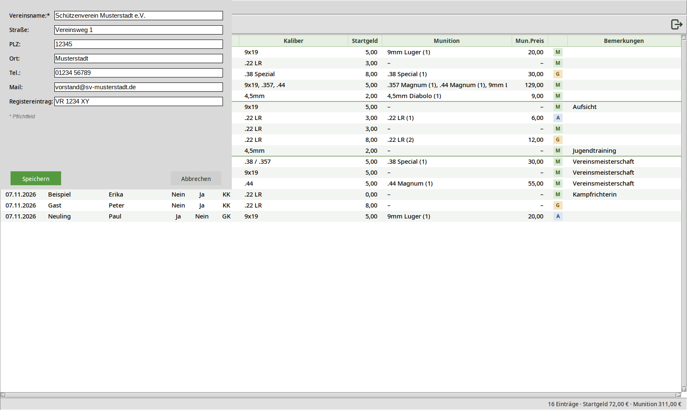
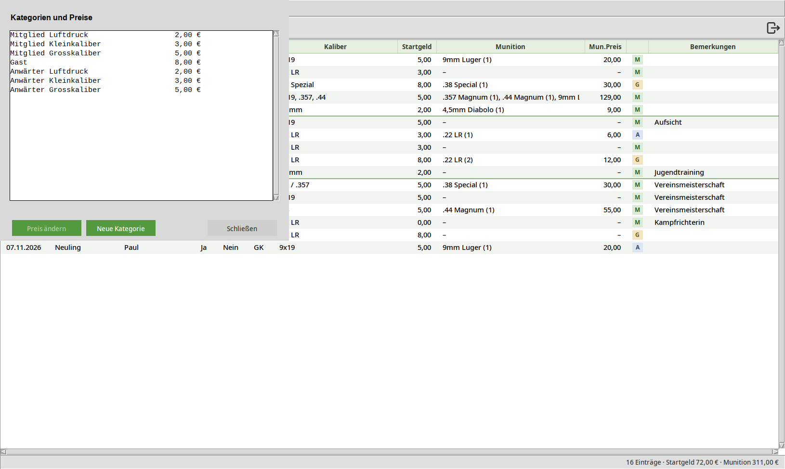
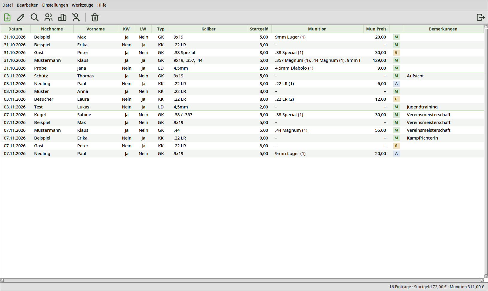
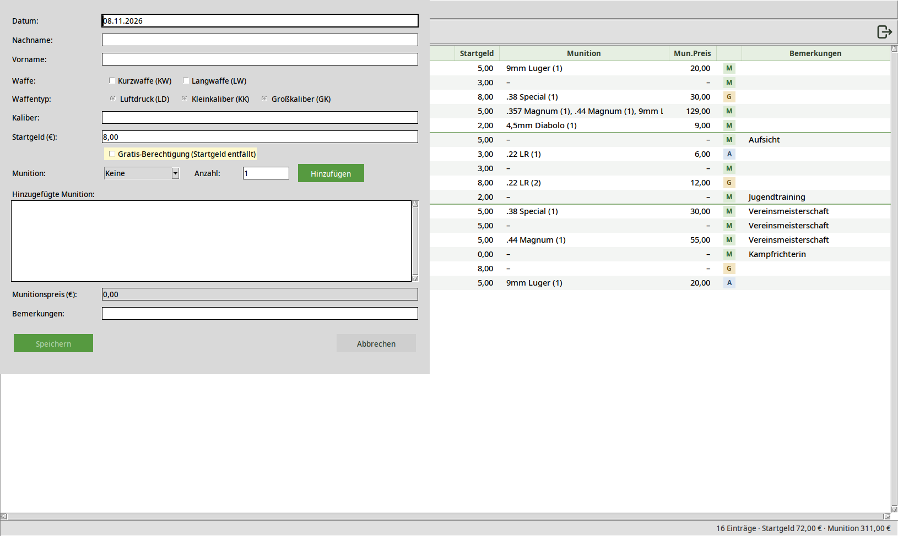
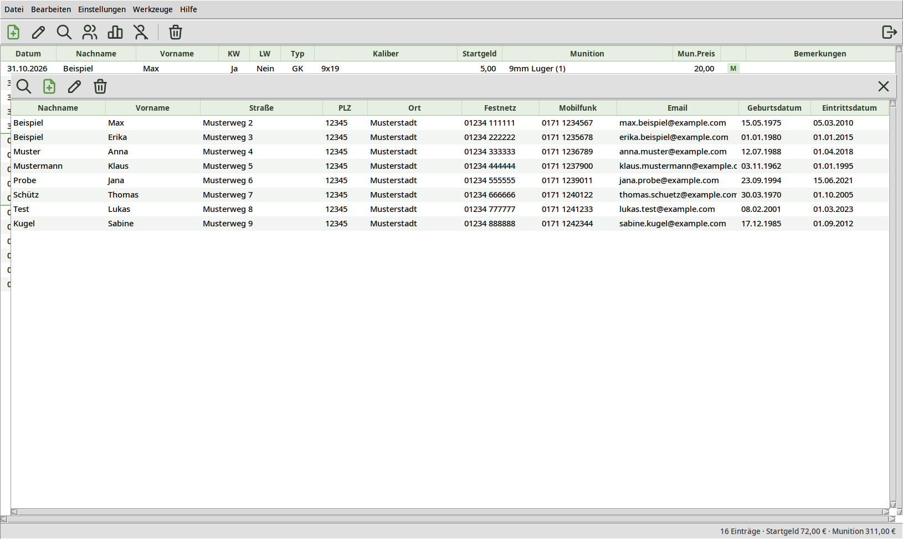
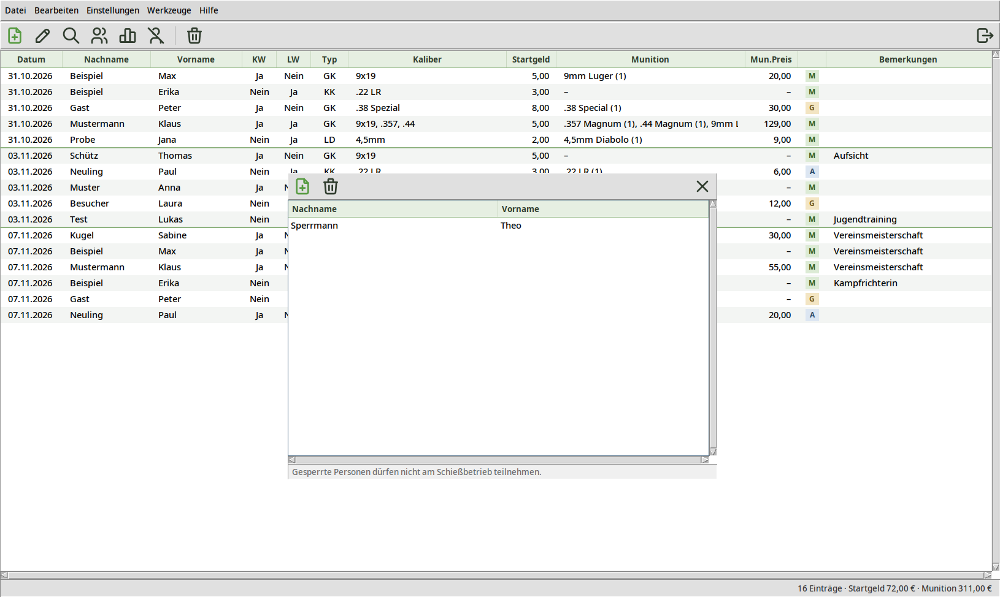
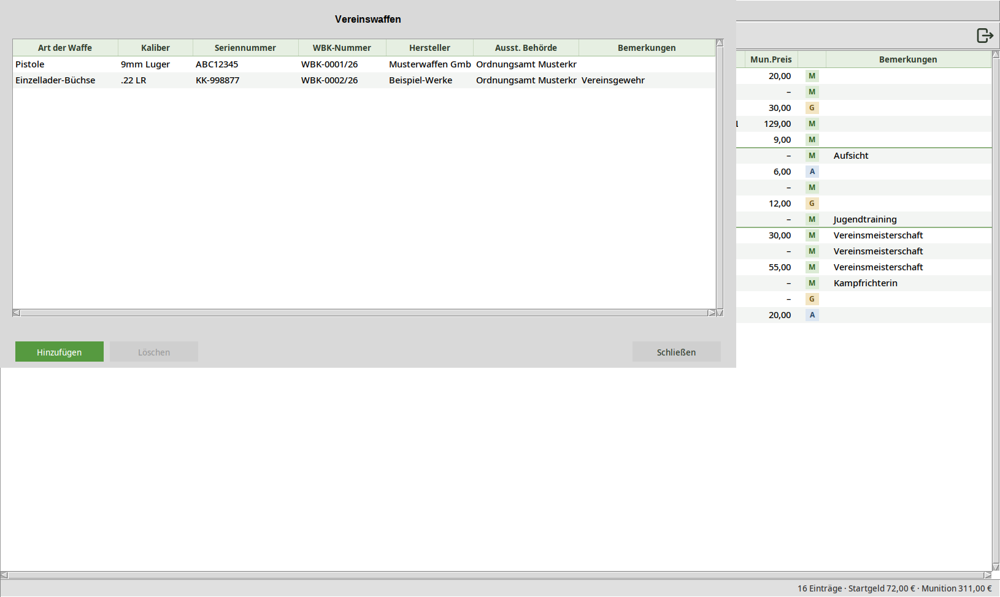
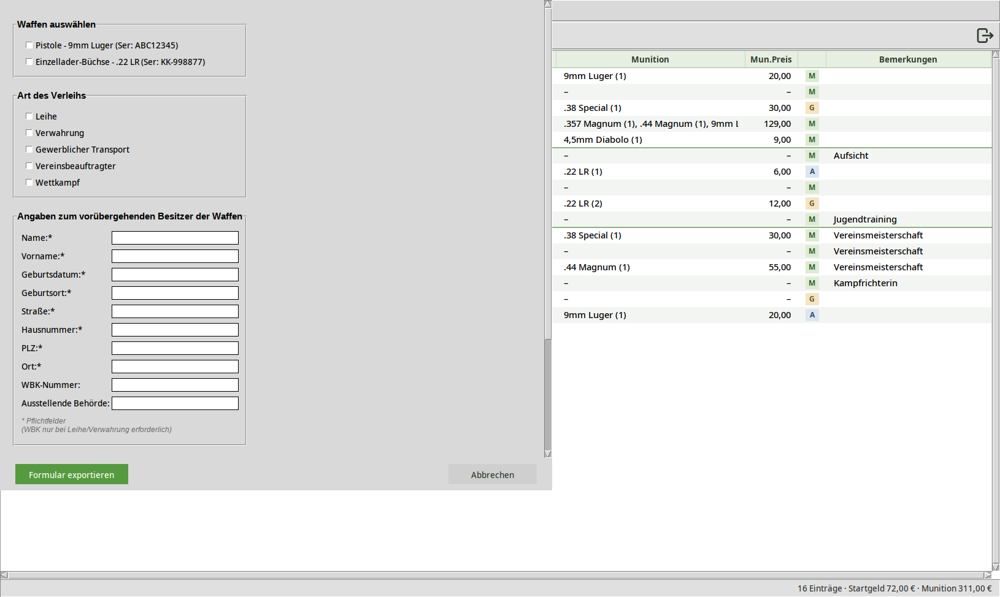
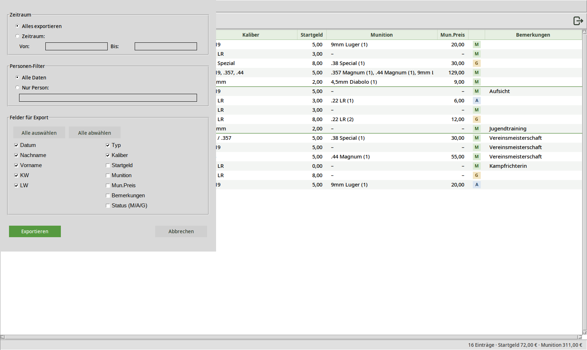
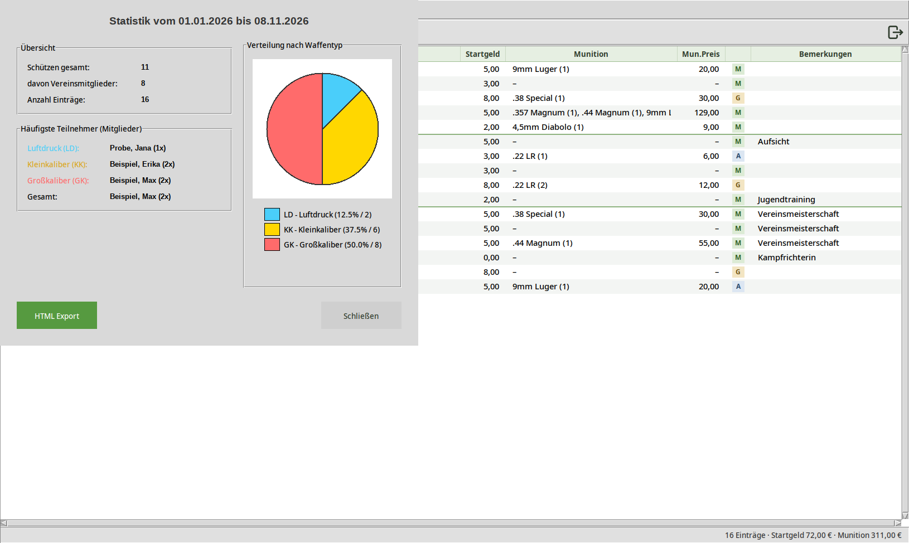

1. Einleitung
SVM-Journal ist die digitale Verwaltungssoftware unseres Schießsportvereins. Sie ersetzt die frühere Dokumentation auf Papier, in Excel-Tabellen und Word-Dokumenten und bündelt an einer Stelle alles, was für den laufenden Schießbetrieb und die Vereinsverwaltung gebraucht wird: das Schießstand-Protokoll, die Mitgliederliste, das Waffenregister, die Gästeliste, eine Sperrliste sowie Auswertungen und Exporte für Behörden und Vorstand.
Dieses Handbuch richtet sich an alle, die künftig im Vereinsbüro Dienst tun und mit dem Programm arbeiten – unabhängig von Vorkenntnissen. Es erklärt Schritt für Schritt, welche Daten vor der ersten Nutzung hinterlegt werden müssen, wie ein gewöhnlicher Schießstand-Besuch erfasst wird und welche zusätzlichen Werkzeuge (Statistik, Bedürfnisnachweis, Waffenverleih, Datenprüfung) zur Verfügung stehen.
1.1 Aufbau des Handbuchs
Kapitel 2 und 3 behandeln die Installation und die einmalige Grundeinrichtung, die vor dem ersten Nutzungstag erledigt sein sollte. Kapitel 4 gibt einen Überblick über die Programmoberfläche. Ab Kapitel 5 wird die tägliche Arbeit beschrieben, gefolgt von den Verwaltungswerkzeugen (Mitglieder, Gäste, Blacklist, Waffenregister, Waffenverleih), den Auswertungen (Export, Statistik, Bedürfnisnachweis) sowie Hinweisen zu Datensicherung und Fehlerbehebung.
Alle Bildschirmfotos in diesem Handbuch zeigen aus Datenschutzgründen frei erfundene Beispieldaten (fiktiver Musterverein, fiktive Mitglieder) und keine echten Personendaten unseres Vereins.
2. Erste Schritte
2.1 Systemvoraussetzungen
SVM-Journal ist eine Tcl/Tk-Anwendung und benötigt einen installierten Tcl/Tk-Interpreter (Version 8.6). Unter Linux lässt sich Tcl/Tk über die Paketverwaltung installieren, sofern nicht bereits vorhanden:
- Debian / Ubuntu: sudo apt install tcl tk
- RedHat / Fedora / SUSE: sudo dnf install tcl tk
- Arch Linux: sudo pacman -S tcl tk
Unter Windows empfiehlt sich die Installation von „Magicsplat Tcl/Tk for Windows“.
2.2 Installation
Eine Installation im klassischen Sinn ist nicht erforderlich. Es genügt, den Programmordner „svm-journal“ an eine gewünschte Stelle zu kopieren – unter Linux bietet sich /opt an, unter Windows C:\Programme.
2.3 Programmstart
Das Programm wird gestartet mit:
- ./svm-journal.tcl (unter Linux/Mac, wenn die Datei ausführbar ist)
- wish svm-journal.tcl (plattformunabhängig)
2.4 Speicherort der Daten
Beim allerersten Start legt SVM-Journal automatisch alle benötigten Verzeichnisse im Benutzerprofil an – nicht im Programmordner selbst. Das Programmverzeichnis kann dadurch problemlos aktualisiert oder ausgetauscht werden, ohne dass Daten verloren gehen.
| Betriebssystem | Speicherort |
|---|---|
| Linux / Mac | ~/.config/svm/ |
| Windows | %APPDATA%\SVM\ |
Innerhalb dieses Ordners gibt es drei Unterverzeichnisse:
- daten/ – Journal-Einträge (jahresweise als JSON-Datei, z. B. 2026.json), Mitgliederliste, Waffenregister, Gästeliste, Blacklist
- preferences/ – Munitions- und Standnutzungspreise, Vereins- und Behördendaten
- backups/ – automatisch erstellte Sicherungskopien, siehe Kapitel 15
2.5 Schutz vor Mehrfachstart
SVM-Journal verhindert, dass das Programm versehentlich zweimal gleichzeitig geöffnet wird (z. B. auf zwei Arbeitsplätzen im Büro über eine gemeinsame Netzwerkfreigabe). Beim Versuch, eine zweite Instanz zu starten, erscheint eine Warnmeldung und das Programm beendet sich sofort wieder. Das schützt vor widersprüchlichen Speicherungen in denselben Dateien.
3. Grundeinrichtung – vor dem ersten Nutzungstag
Die folgenden Schritte sollten einmalig durchgeführt werden, bevor das Programm im laufenden Betrieb genutzt wird. Ohne diese Einrichtung funktionieren wichtige Automatismen (automatische Startgeld-Berechnung, Mitgliedserkennung) nicht korrekt.
3.1 Vereinsdaten hinterlegen
Menü Einstellungen → Verein. Hier werden Vereinsname, Anschrift, Telefon, E-Mail und Registereintrag hinterlegt. Diese Angaben erscheinen automatisch auf dem Waffenverleih-Formular als „Überlasser“.

3.2 Behördendaten hinterlegen
Menü Einstellungen → Behörde. Hier wird die zuständige Waffenbehörde (Name, Anschrift, Telefon, Fax, E-Mail) hinterlegt. Diese Angabe wird im Waffenregister und beim Waffenverleih-Formular automatisch eingeblendet.
3.3 Standnutzungspreise einrichten
Menü Einstellungen → Preise Standnutzung. Hier werden die Startgelder je Schützenkategorie festgelegt, die im Dialog „Neuer Eintrag“ automatisch vorgeschlagen werden. Die Anwärter-Preise gelten für Personen auf der Warteliste (siehe 6.4).
- Mitglied Luftdruck
- Mitglied Kleinkaliber
- Mitglied Grosskaliber
- Gast
- Anwärter Luftdruck
- Anwärter Kleinkaliber
- Anwärter Grosskaliber
Weicht eine Kategorie-Bezeichnung hiervon ab (z. B. „Grossraum“ statt „Grosskaliber“, oder ein zusätzliches Leerzeichen), wird für diese Kategorie kein automatischer Preis vorgeschlagen und das Feld bleibt beim Anlegen eines Eintrags leer bzw. muss manuell eingetragen werden.

Über die Schaltflächen „Neue Kategorie“ und „Preis ändern“ lassen sich Kategorien anlegen bzw. deren Preis anpassen, z. B. bei einer allgemeinen Beitragserhöhung.
3.4 Munitionspreise einrichten
Menü Einstellungen → Preise Munition. Hier wird für jedes im Verein gebräuchliche Kaliber ein Preis pro Schuss bzw. Packungseinheit hinterlegt. Diese Kaliber stehen anschließend im Dialog „Neuer Eintrag“ als Auswahlliste zur Verfügung; der Munitionspreis wird beim Erfassen automatisch mit der eingegebenen Anzahl multipliziert und aufaddiert.
3.5 Mitgliederliste anlegen
Menü Werkzeuge → Mitgliederliste. Für jedes Vereinsmitglied sollten mindestens Nachname und Vorname korrekt erfasst werden; empfohlen werden zusätzlich Geburtsdatum, Geburtsort, Anschrift, Kontaktdaten, Eintrittsdatum und Funktion im Verein.
3.6 Waffenregister anlegen (falls der Verein eigene Waffen besitzt)
Menü Werkzeuge → Waffenregister. Hier werden alle Vereinswaffen mit Art, Kaliber, Seriennummer, WBK-Nummer, Hersteller, ausstellender Behörde und Bemerkungen erfasst. Ein gepflegtes Waffenregister ist Voraussetzung dafür, dass das Werkzeug „Waffenverleih“ (Kapitel 10) genutzt werden kann – ohne mindestens eine eingetragene Waffe verweigert das Programm das Öffnen des Verleihformulars.
4. Die Programmoberfläche im Überblick
Nach dem Start zeigt SVM-Journal das Hauptfenster mit der Liste aller bisherigen Schießstand-Einträge. Das Fenster gliedert sich in vier Bereiche:

4.1 Menüleiste
| Menü | Enthält |
|---|---|
| Datei | Exportieren…, Beenden (Strg+Q) |
| Bearbeiten | Suchen (Strg+S) |
| Einstellungen | Preise Munition, Preise Standnutzung, Verein, Behörde |
| Werkzeuge | Mitgliederliste, Gästeliste, Warteliste, Waffenregister, Waffenverleih, Daten überprüfen, Statistik, Teilnahme am Training, Person sperren |
| Hilfe | Handbuch (öffnet dieses Handbuch im Webbrowser), Über… (Versionsnummer und Lizenzinformationen) |
4.2 Symbolleiste
Die wichtigsten Funktionen sind zusätzlich als Symbole direkt erreichbar (von links nach rechts): Neuer Eintrag, Eintrag bearbeiten, Suchen, Mitgliederliste, Statistik, Blacklist, Ausgewählten Eintrag löschen – und ganz rechts Programm beenden.
Der Papierkorb ist durch einen senkrechten Strich von den übrigen Symbolen abgesetzt, damit er nicht versehentlich angeklickt wird. Bleibt der Mauszeiger kurz über einem Symbol stehen, erscheint ein Hinweis mit der Funktion und gegebenenfalls dem Tastenkürzel.
4.3 Eintragstabelle
Die zentrale Tabelle zeigt alle Einträge, sortiert nach Datum und Uhrzeit. Angezeigte Spalten: Datum, Nachname, Vorname, KW (Kurzwaffe), LW (Langwaffe), Typ (Waffentyp LD/KK/GK), Kaliber, Startgeld, Munition, Munitionspreis, Status und Bemerkungen. Zur besseren Lesbarkeit gilt:
- Zeilen – sind abwechselnd weiß und hellgrau hinterlegt.
- Tageswechsel – eine grüne Linie trennt die Einträge verschiedener Tage.
- Keine Munition – wurde keine Munition gekauft, steht in den Spalten Munition und Mun.Preis ein Strich „–“.
- Status – die schmale Spalte ohne Überschrift zeigt farbig hinterlegt, wer geschossen hat: M (grün) = Mitglied, A (blau) = Anwärter, G (sandfarben) = Gastschütze. Bleibt der Mauszeiger auf dem Kürzel stehen, erscheint der volle Begriff. Ein leeres Feld bedeutet „unbekannt“ (nur bei älteren Einträgen, siehe 5.3).
- Lange Texte – passt ein Text nicht in seine Spalte, zeigt ein Hinweis beim Überfahren mit der Maus den vollständigen Inhalt.
Ein Rechtsklick auf einen Eintrag öffnet ein Kontextmenü zum Bearbeiten oder Löschen; ein Doppelklick bzw. die Eingabetaste öffnet direkt den Bearbeiten-Dialog.
4.4 Statuszeile
Rechts in der Statuszeile stehen Anzahl, Summe Startgeld und Summe Munition der gerade angezeigten Einträge, z. B. „16 Einträge · Startgeld 72,00 € · Munition 311,00 €“. Die Werte werden nach jeder Änderung sofort aktualisiert. Nach einer Suche (siehe 5.7) gelten sie nur für die gefundenen Einträge; links erscheint dann in roter Schrift ein Hinweis, dass die Ansicht gefiltert ist.
5. Täglicher Gebrauch: einen Schießstand-Besuch erfassen
5.1 Neuen Eintrag anlegen
Über das Symbol „Neuer Eintrag“, das Tastenkürzel Strg+N oder den entsprechenden Button wird der Erfassungsdialog geöffnet.

Folgende Angaben werden gemacht:
- Datum – wird mit dem heutigen Datum vorbelegt, kann bei Bedarf geändert werden
- Nachname / Vorname – mit Autovervollständigung aus der Mitgliederliste und der Warteliste; bei genauer Übereinstimmung wird der Vorname automatisch ergänzt
- Waffe – Kurzwaffe (KW) und/oder Langwaffe (LW), Mehrfachauswahl möglich
- Waffentyp – Luftdruck (LD), Kleinkaliber (KK) oder Großkaliber (GK); bestimmt zusammen mit der Mitgliedschaft das Startgeld
- Startgeld – wird automatisch berechnet (siehe 5.2), kann bei Bedarf manuell überschrieben werden
- Gratis-Berechtigung – Checkbox für Ausnahmefälle, in denen kein Startgeld erhoben wird; setzt das Startgeld fest auf 0,00 € und sperrt das Feld gegen Überschreiben
- Munition und Anzahl – Kaliber auswählen, Anzahl eingeben, mit „Hinzufügen“ der Liste hinzufügen; der Munitionspreis wird automatisch aufsummiert (mehrere Kaliber pro Eintrag möglich)
- Bemerkungen – Freitextfeld, z. B. für Besonderheiten. Ob die Person Mitglied, Anwärter oder Gast ist, muss hier nicht eingetragen werden – das Programm speichert den Status automatisch (siehe 5.3).
Mit „Speichern“ wird der Eintrag übernommen und erscheint sofort in der Haupttabelle.
5.2 Automatische Startgeld-Berechnung
Sobald Nachname und Vorname eingegeben sind, prüft das Programm, ob diese Kombination in der Mitgliederliste vorhanden ist:
- Mitglied erkannt: Es wird der für den gewählten Waffentyp hinterlegte Mitgliedspreis vorgeschlagen (Luftdruck/Kleinkaliber/Großkaliber, siehe 3.3).
- Anwärter erkannt: Steht die Person auf der Warteliste (siehe 6.4), wird der Anwärterpreis für den gewählten Waffentyp vorgeschlagen.
- Weder Mitglied noch Anwärter (Gast): Es wird der einheitliche Gastpreis vorgeschlagen, unabhängig vom Waffentyp.
Der Abgleich erfolgt anhand von Nachname UND Vorname (nicht nach Nachname allein), damit z. B. „Anna Müller“ nicht fälschlich als Mitglied erkannt wird, nur weil ein „Karl Müller“ Mitglied ist. Ändert sich Waffentyp oder Name nachträglich, wird das Startgeld automatisch neu berechnet – außer die Gratis-Berechtigung ist aktiviert.
5.3 Gastschützen dokumentieren
Wird beim Ausfüllen des Namensfelds erkannt, dass die Person weder Vereinsmitglied noch Anwärter ist, prüft das Programm zunächst, ob der Name nur vertauscht oder vertippt wurde (siehe 5.8), und gleicht ihn dann automatisch mit der Gästeliste (Kapitel 7) ab:
- Unbekannter Gast: Es erscheint der Hinweis, unbedingt die Personalien aufzunehmen und den Personalausweis oder Reisepass zu kopieren. Nach Bestätigung wird die Person automatisch in die Gästeliste eingetragen.
- Bekannter Gast: Es erscheint der Hinweis, dass die Person bereits in der Gästeliste geführt wird und keine weiteren Daten erhoben werden müssen.
Status des Eintrags: Beim Speichern legt das Programm zu jedem Eintrag automatisch fest, ob die Person Mitglied (M), Anwärter (A) oder Gastschütze (G) ist. Der Status erscheint in der Haupttabelle als farbiges Kürzel (siehe 4.3) und bleibt erhalten, auch wenn ein Gast später Mitglied wird. Das Bemerkungsfeld bleibt so frei für echte Bemerkungen.
5.4 Gesperrte Personen (Blacklist-Prüfung)
Ist eine eingegebene Person auf der Sperrliste (Kapitel 8) vermerkt, erscheint sofort ein roter Warnhinweis „… ist vom Schießbetrieb ausgeschlossen“ und die Schaltfläche „Speichern“ wird deaktiviert. Ein Eintrag für diese Person kann dann nicht angelegt werden.
5.5 Eintrag bearbeiten
Ein bestehender Eintrag wird bearbeitet, indem er in der Haupttabelle markiert und anschließend per Doppelklick, Eingabetaste, Symbol „Eintrag bearbeiten“ oder über das Rechtsklick-Kontextmenü geöffnet wird. Der Bearbeiten-Dialog entspricht dem Dialog „Neuer Eintrag“, ist jedoch mit den vorhandenen Werten vorbelegt.
Datum und Uhrzeit eines Eintrags können nicht geändert werden. Zusätzlich lässt sich im Bearbeiten-Dialog der Status korrigieren (Mitglied, Anwärter, Gastschütze oder unbekannt) – etwa bei älteren Einträgen, deren Status bei der Umstellung nicht ermittelt werden konnte.
5.6 Eintrag löschen
Ein Eintrag wird über das Rechtsklick-Kontextmenü oder das Symbol „Löschen“ entfernt. Vor dem endgültigen Löschen erscheint eine Sicherheitsabfrage; zusätzlich wird automatisch eine Sicherungskopie der betroffenen Jahresdatei im Backup-Verzeichnis abgelegt (siehe Kapitel 15).
5.7 Im Journal suchen
Über Strg+S, das Symbol „Suchen“ oder Menü Bearbeiten → Suchen öffnet sich ein Suchfeld. Die Tabelle wird bei jeder Tasteneingabe live nach Nachname und Vorname gefiltert; die Reihenfolge der Suchwörter spielt keine Rolle („Max Beispiel“ findet dasselbe wie „Beispiel Max“). Gesucht wird immer in allen Einträgen. Solange die Ansicht gefiltert ist, weist die Statuszeile darauf hin (siehe 4.4). Die Taste Escape setzt die Ansicht wieder auf alle Einträge zurück.
5.8 Rückfrage bei vertauschten oder ähnlichen Namen
Ist ein eingegebener Name weder Mitglied, Anwärter noch bekannter Gast, prüft das Programm, ob Vor- und Nachname vertauscht wurden (z. B. „Max Beispiel“ statt „Beispiel, Max“) oder ob ein sehr ähnlicher bekannter Name existiert (Tippfehler, z. B. „Mustermnn“ statt „Mustermann“). In diesem Fall erscheint die Rückfrage „Meinten Sie …?“:
- Ja – der bekannte Name wird in die Eingabefelder übernommen.
- Nein – die Eingabe bleibt unverändert, die Person wird als Gast behandelt.
Ein Vorschlag erscheint nur, wenn genau eine Person in Frage kommt. So wird verhindert, dass ein Mitglied mit vertauschtem oder vertipptem Namen versehentlich als neuer Gast erfasst und in die Gästeliste eingetragen wird.
6. Mitgliederverwaltung
Menü Werkzeuge → Mitgliederliste oder Symbol „Mitglieder“ öffnet die Verwaltung aller Vereinsmitglieder.

6.1 Erfasste Felder
| Feld | Bemerkung |
|---|---|
| Nachname, Vorname | Pflichtfelder; maßgeblich für die automatische Mitgliedserkennung |
| Geburtsdatum, Geburtsort | wird u. a. für das Waffenverleih-Formular übernommen |
| Straße, PLZ, Ort | Anschrift |
| Festnetz, Mobilfunk, E-Mail | Kontaktdaten |
| Eintrittsdatum | Datum des Vereinseintritts |
| Funktion | z. B. Vorstandsamt, Übungsleiter |
6.2 Mitglied hinzufügen, bearbeiten, löschen
Über die Symbolleiste des Fensters lassen sich neue Mitglieder hinzufügen. Ein Doppelklick, die Eingabetaste oder das Rechtsklick-Kontextmenü öffnen die Detailansicht bzw. den Bearbeiten-Dialog eines markierten Mitglieds. Beim Löschen wird automatisch eine Sicherungskopie erstellt. Die Liste wird nach jeder Änderung automatisch alphabetisch nach Nachname, dann Vorname sortiert.
6.3 Mitglieder suchen
Über die Lupe in der Symbolleiste des Mitgliederfensters kann gezielt nach einem Namen gesucht werden.
6.4 Warteliste (Anwärter auf eine Mitgliedschaft)
Menü Werkzeuge → Warteliste öffnet die Liste der Personen, die auf eine Mitgliedschaft warten. Das Fenster entspricht der Mitgliederverwaltung (ohne Eintrittsdatum und Funktion) und zeigt zusätzlich in der Spalte „Platz“ die Reihenfolge der Eintragung: Wer zuletzt eingetragen wurde, steht am Ende; beim Bearbeiten behält ein Anwärter seinen Platz. Die Statuszeile zeigt die Anzahl der Personen auf der Warteliste.
Über das Rechtsklick-Kontextmenü lässt sich ein Anwärter bearbeiten, löschen oder in die Mitgliederliste übernehmen. Die Übernahme öffnet den Dialog „Neues Mitglied hinzufügen“, vorbelegt mit den Daten des Anwärters und dem heutigen Datum als Eintrittsdatum. Erst mit „Speichern“ wird der Anwärter von der Warteliste entfernt; „Abbrechen“ ändert nichts. Steht eine Person bereits in der Mitgliederliste oder auf der Warteliste, weist das Programm darauf hin.
Im Dialog „Neuer Eintrag“ werden Anwärter automatisch erkannt: Sie erhalten den Anwärterpreis (siehe 3.3), den Status A und keinen Gastschützen-Hinweis. In Statistik und Teilnahme-Auswertung werden Anwärter wie Gäste behandelt.
7. Gästeverwaltung
Menü Werkzeuge → Gästeliste öffnet die Verwaltung aller bereits bekannten Gastschützen. Diese Liste wird primär automatisch gepflegt (siehe 5.3): Sobald ein bisher unbekannter Gast im Dialog „Neuer Eintrag“ erfasst wird, trägt das Programm ihn automatisch ein.
Die manuelle Verwaltung erlaubt zusätzlich, Gäste im Voraus einzutragen (z. B. bei Wettkampfteilnehmern) sowie bestehende Einträge zu bearbeiten oder zu entfernen. Zweck der Liste ist es, bei wiederholten Besuchen desselben Gastes zu erkennen, dass die Personalien bereits aufgenommen und der Ausweis bereits kopiert wurden – so müssen diese Daten nicht bei jedem Besuch erneut erhoben werden.
8. Personen sperren (Blacklist)
Menü Werkzeuge → Person sperren oder das Symbol „Blacklist“ öffnet die Verwaltung der vom Schießbetrieb ausgeschlossenen Personen.

Über „Hinzufügen“ wird eine Person mit Nachname und Vorname gesperrt. Die Prüfung erfolgt automatisch und sofort bei jeder Namenseingabe im Dialog „Neuer Eintrag“ (siehe 5.4) – ein Eintrag für eine gesperrte Person kann nicht gespeichert werden. Über „Löschen“ kann eine Sperrung wieder aufgehoben werden.
9. Waffenregister
Menü Werkzeuge → Waffenregister verwaltet alle Waffen, die im Besitz des Vereins sind.

| Feld | Bemerkung |
|---|---|
| Art der Waffe * | z. B. Pistole, Revolver, Gewehr |
| Kaliber * | |
| Seriennummer * | |
| WBK-Nummer * | Nummer der Waffenbesitzkarte |
| Hersteller | optional |
| Ausstellende Behörde | wird automatisch aus den Behördendaten (3.2) vorbelegt |
| Bemerkungen | Freitext |
(* Pflichtfelder)
10. Waffenverleih dokumentieren
Menü Werkzeuge → Waffenverleih öffnet das Formular zur Dokumentation der vorübergehenden Überlassung einer Vereinswaffe (§ 12 Abs. 1 WaffG), z. B. bei Leihe, Verwahrung oder Transport. Voraussetzung ist, dass mindestens eine Waffe im Waffenregister und die Vereinsdaten (3.1) hinterlegt sind – andernfalls erscheint ein entsprechender Warnhinweis.

10.1 Art des Verleihs
Es kann eine oder mehrere der folgenden Kategorien angekreuzt werden: Leihe, Verwahrung, Gewerblicher Transport, Vereinsbeauftragter, Wettkampf. WBK-Nummer und ausstellende Behörde des vorübergehenden Besitzers sind nur bei „Leihe“ und „Verwahrung“ Pflichtangaben.
10.2 Angaben zum vorübergehenden Besitzer
Beim Eintragen des Nachnamens gleicht das Programm automatisch mit der Mitgliederliste ab und füllt bei Übereinstimmung Vorname, Geburtsdatum, Straße, Hausnummer, PLZ und Ort automatisch aus (bei mehreren Mitgliedern mit gleichem Nachnamen erscheint eine Auswahl). Das erspart bei eigenen Mitgliedern die erneute manuelle Eingabe der Adressdaten.
10.3 Formular exportieren
Über „Formular exportieren“ wird ein ausdruckbares HTML-Dokument erzeugt, das alle Angaben inklusive Vereinsdaten und Angaben zur überlassenen Waffe enthält und zur Unterschrift durch den vorübergehenden Besitzer verwendet werden kann.
11. Datenexport
Menü Datei → Exportieren öffnet den Export-Dialog, mit dem sich die Journal-Einträge als HTML-Dokument ausgeben lassen, z. B. für Vorstandssitzungen oder Behördenanfragen.

11.1 Zeitraum und Personen-Filter
Es kann wahlweise der gesamte Datenbestand oder ein bestimmter Zeitraum (Von/Bis-Datum) exportiert werden. Zusätzlich lässt sich der Export auf eine einzelne Person eingrenzen, z. B. um für ein Mitglied eine Übersicht seiner Trainingsteilnahmen zu erstellen.
11.2 Feldauswahl
Über Checkboxen wird festgelegt, welche der zwölf möglichen Spalten (Datum, Nachname, Vorname, KW, LW, Typ, Kaliber, Startgeld, Munition, Munitionspreis, Bemerkungen, Status) im Export enthalten sein sollen. Der Status wird im Export ausgeschrieben (Mitglied, Anwärter, Gastschütze). Für Nachweise gegenüber der Waffenbehörde bietet es sich beispielsweise an, die Preisspalten abzuwählen.
12. Statistik über den Schießbetrieb
Menü Werkzeuge → Statistik oder das entsprechende Symbol öffnet zunächst einen Zeitraum-Dialog (vorbelegt mit dem 1. Januar des laufenden Jahres bis heute) und anschließend das Ergebnisfenster.

Angezeigt werden: Gesamtzahl der Schützen im Zeitraum, Anzahl der beteiligten Vereinsmitglieder, Gesamtzahl der Einträge, die jeweils häufigsten Teilnehmer nach Waffentyp (Luftdruck, Kleinkaliber, Großkaliber) sowie ein Kreisdiagramm mit der prozentualen Verteilung der Waffentypen. Über „HTML Export“ lässt sich die Auswertung inklusive Diagramm als Dokument speichern.
13. Teilnahme am Training (Bedürfnisnachweis)
Menü Werkzeuge → Teilnahme am Training wertet aus, wie oft jedes Vereinsmitglied im gewählten Zeitraum mit Kurz- bzw. Langwaffe am Schießtraining teilgenommen hat.
Gezählt wird pro Trainingstag: Mehrere Einträge am selben Datum mit derselben Waffengattung zählen als eine Teilnahme. Im Ergebnisfenster werden die Mitglieder farblich markiert:
- Grün: mindestens sechs Teilnahmen bei beiden Waffengattungen
- Rot: noch keine Teilnahme
- Schwarz: alle übrigen Fälle
Die Spalte „Trainingstage gesamt“ zählt jeden Tag nur einmal, auch wenn an diesem Tag mit Kurz- und Langwaffe trainiert wurde.
Mit den runden Auswahlknöpfen vor den Farben der Legende lässt sich die Tabelle auf eine Gruppe beschränken (z. B. nur „Rot“); „Alle anzeigen“ hebt die Einschränkung wieder auf. Der HTML-Export übernimmt die gewählte Ansicht, vermerkt sie im Dokument und ergänzt den vorgeschlagenen Dateinamen (z. B. „_Rot“), damit ein gefilterter Export nicht versehentlich einen vollständigen überschreibt.
Auch dieses Ergebnis lässt sich per HTML-Export als Dokument speichern, z. B. zur Vorlage bei der Waffenbehörde.
14. Daten überprüfen und reparieren
Menü Werkzeuge → Daten überprüfen startet ein Werkzeug, das alle JSON-Datendateien (Journal-Jahresdateien, Mitglieder, Waffenregister, Gästeliste, Blacklist sowie die Einstellungsdateien im preferences-Ordner) auf Konsistenz prüft.
Fehlende Felder in älteren Einträgen (z. B. wenn nach einem Programm-Update neue Felder wie „Bemerkungen“ oder „Gratis“ hinzugekommen sind) werden automatisch ergänzt, sodass ältere Daten weiterhin korrekt angezeigt werden. Außerdem werden überflüssige Leerzeichen in Nach- und Vornamen bereinigt. Vor jeder automatischen Korrektur wird eine Sicherungskopie der betroffenen Datei im Backup-Verzeichnis angelegt. Am Ende der Prüfung zeigt das Werkzeug eine Zusammenfassung mit Anzahl der geprüften Dateien, gefundenen und korrigierten Fehlern sowie erstellten Backups.
14.1 Namensbericht
Die Schaltfläche „Namensbericht“ im Fenster „Daten überprüfen“ listet verdächtige Namen auf, ändert aber selbst keine Daten – ob tatsächlich ein Fehler vorliegt, entscheidet der Nutzer. Der Bericht besteht aus vier Abschnitten:
- Journal-Einträge mit vermutlich falsch erfasstem Namen (vertauschte Vor- und Nachnamen oder Tippfehler gegenüber Mitgliedern, Anwärtern und Gästen) mit Anzahl und Datum der Einträge und dem vermuteten richtigen Namen
- doppelt erfasste Personen in Mitglieder-, Gäste- und Warteliste
- sehr ähnliche oder vertauschte Namen innerhalb dieser Listen (z. B. „Seifert“ als Mitglied und „Seiffert“ als Gast)
- Namen mit überflüssigen Leerzeichen in Mitglieder- und Warteliste
Zu jedem Abschnitt steht ein Hinweis, wie die Korrektur vorgenommen wird.
15. Datensicherung
15.1 Automatische Sicherungen
SVM-Journal legt beim Löschen von Journal-Einträgen, Mitgliedern und Anwärtern, bei automatischen Korrekturen durch die Datenprüfung (Kapitel 14) sowie vor der einmaligen Status-Umstellung älterer Einträge (siehe 5.3) automatisch Sicherungskopien der betroffenen Datei an. Diese liegen mit Zeitstempel versehen im zentralen Backup-Verzeichnis:
- Linux/Mac: ~/.config/svm/backups/
- Windows: %APPDATA%\SVM\backups\
Um die Anzahl der gespeicherten Backups nicht unbegrenzt wachsen zu lassen, bereinigt das Programm ältere Sicherungen automatisch (maximal zehn Backups je Datei werden vorgehalten).
15.2 Empfehlung für zusätzliche externe Sicherung
15.3 Fehlersuche über die Log-Datei
Im Datenordner wird fortlaufend eine Log-Datei svm-journal.log geschrieben, die unter anderem den Ablauf der Programm-Initialisierung protokolliert. Bei Problemen, die telefonisch oder per E-Mail an die technische Betreuung gemeldet werden, kann diese Datei bei der Fehlersuche hilfreich sein.
16. Tastenkürzel – Übersicht
| Tastenkombination | Wirkung |
|---|---|
| Strg + N | Neuen Eintrag anlegen |
| Strg + S | Suchen im Journal |
| Strg + Q | Programm beenden |
| Doppelklick / Eingabetaste auf einem Eintrag | Eintrag bearbeiten |
| Rechtsklick auf einem Eintrag | Kontextmenü Bearbeiten / Löschen |
| Escape (im Hauptfenster nach einer Suche / in Suchfeldern) | Alle Einträge wieder anzeigen / Sucheingabe zurücksetzen |
17. Häufige Fragen und Problemlösungen
Das Startgeld wird beim Anlegen eines Eintrags nicht automatisch vorgeschlagen.
Prüfen Sie unter Einstellungen → Preise Standnutzung, ob die Kategorien exakt wie in Kapitel 3.3 beschrieben benannt sind (Mitglied Luftdruck, Mitglied Kleinkaliber, Mitglied Grosskaliber, Gast sowie Anwärter Luftdruck, Anwärter Kleinkaliber, Anwärter Grosskaliber). Bereits kleine Abweichungen in der Schreibweise verhindern die automatische Zuordnung.
Ein bekanntes Vereinsmitglied wird fälschlich als Gast erkannt.
Die automatische Erkennung vergleicht Nachname UND Vorname mit der Mitgliederliste; Groß-/Kleinschreibung und überflüssige Leerzeichen spielen dabei keine Rolle. Bei vertauschten Namen oder kleinen Tippfehlern schlägt das Programm den bekannten Namen vor (siehe 5.8). Prüfen Sie in der Mitgliederverwaltung, ob der Name genauso geschrieben ist wie im Journal eingegeben (z. B. Zusatz wie ein zweiter Vorname, abweichende Schreibweise).
Beim Programmstart erscheint die Meldung „Es läuft bereits eine Instanz“, obwohl das Programm nicht sichtbar geöffnet ist.
Dies deutet auf eine sogenannte verwaiste Sperrdatei hin, die z. B. nach einem Absturz zurückgeblieben ist. Prüfen Sie zunächst in der Aufgabenverwaltung des Betriebssystems, ob tatsächlich kein SVM-Journal-Prozess mehr läuft, und starten Sie den Rechner im Zweifel neu.
Wo landen exportierte HTML-Dateien?
Beim Export (Datei → Exportieren, Statistik, Teilnahme am Training oder Waffenverleih-Formular) öffnet sich jeweils ein Dateiauswahl-Dialog, in dem Speicherort und Dateiname frei gewählt werden können.
Der Waffenverleih-Dialog lässt sich nicht öffnen.
Prüfen Sie, ob mindestens eine Waffe im Waffenregister (Kapitel 9) sowie die Vereinsdaten (Kapitel 3.1) hinterlegt sind – beides ist Voraussetzung für dieses Werkzeug.
Bei einem Eintrag fehlt das farbige Status-Kürzel.
Der Status konnte bei der Umstellung älterer Einträge nicht ermittelt werden, weil die Person in keiner Liste steht (z. B. ein ehemaliges Mitglied). Er lässt sich im Bearbeiten-Dialog nachtragen (siehe 5.5).
Wie öffne ich dieses Handbuch aus dem Programm heraus?
Über das Menü Hilfe → Handbuch. Es öffnet sich im Standard-Webbrowser des Computers.
18. Ansprechpartner
SVM-Journal wurde für unseren Verein entwickelt und wird bei Bedarf um weitere Funktionen erweitert. Bei technischen Fragen, Fehlermeldungen oder Änderungswünschen wenden Sie sich bitte an:
Hans-Dieter Schlabritz
E-Mail: hadisch@zavb.de
Bitte fügen Sie bei technischen Problemen nach Möglichkeit eine kurze Beschreibung des Ablaufs sowie – falls vorhanden – die Log-Datei svm-journal.log (siehe Kapitel 15.3) bei.